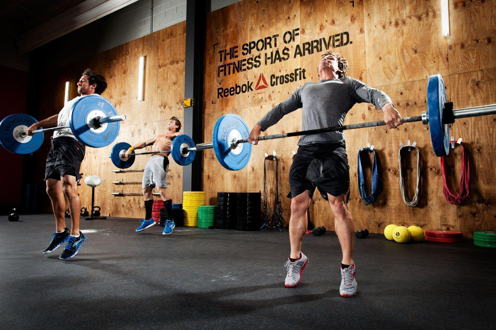

¡Bienvenido a Turnos Gym!
Tu lugar para entrenar con organización. Reservá tus turnos y entrená sin esperas.
¿Por qué usar Turnos Gym?
- ✅ Reservá turnos en segundos
- ✅ Evitá superpoblación en el gym
- ✅ Llevá el control de tus entrenamientos
Horarios del Gimnasio
Lunes a Viernes: 7:00 - 22:00 hs
Sábados: 8:00 - 14:00 hs
Domingos: Cerrado
Lo que dicen nuestros atletas
“Reservar turnos me ayudó a no perder entrenamientos y organizarme mejor.” – Juan P.
“Me encanta poder elegir el horario que quiero y saber que no estará lleno.” – Carla M.